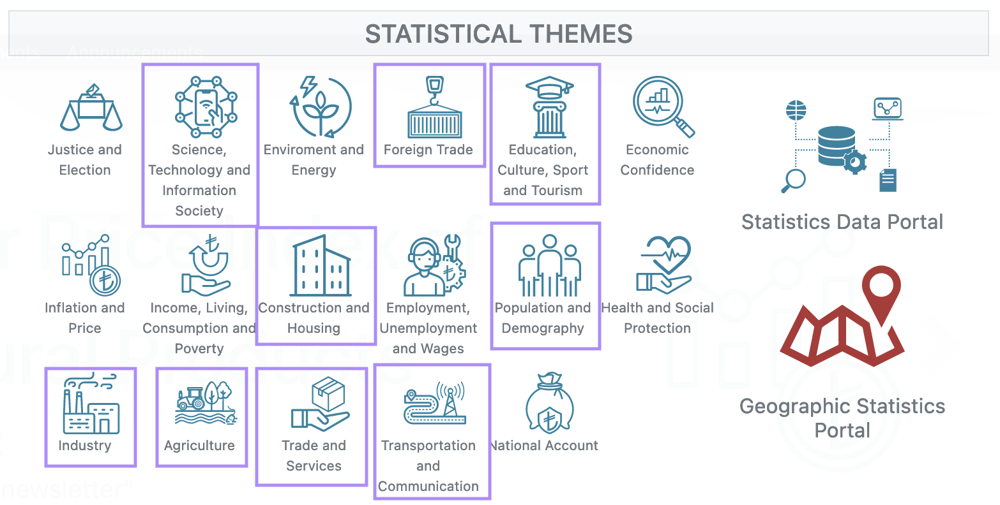

Projects and Project Guidelines
Phases and Deadlines
- Project Proposal (
Nov 2, 23:59Nov 6, 23:59) - Preparation of the preprocessed data (Nov 16, 23:59)
- Exploratory Data Analysis (Nov 30, 23:59)
- Rehearsal (Dec 14, 23:59)
- Blog Post & Teaser (Dec 14, 23:59)
- Final Project and Presentation (TBA)
Final deadline is strict, but you will be able to revise your final project document.
Potential Projects and Proposals
This year’s theme is National Statistics.

Your group is asked to choose from one of the nine domains on TÜİK (Türk İstatistik Kurumu / Turkish Statistical Institute) website. You will prepare an extensive EDA report using data under the domain of your choice.
Avabilable domains are as follows.
- Science, Technology and Information Society
- Foreign Trade
- Education, Culture, Sport and Tourism
- Construction and Housing
- Population and Demography
- Industry
- Agriculture
- Trade and Services
- Transportation and Communication
Each domain can be studied by only one group. Again there is a “first come first served” principle given that your project proposal is accepted.
Project Proposals
One person for each group needs to write an email to specify the domain of their choice. They should provide a short reason about why they picked that domain, how they are going to tell a story of numbers and statistics, and finally which data sets they are going to use.
Your analyses are expected to span over multiple data sets and multiple years. Though, you should provide a high quality narrative with striking conclusions. Therefore your analyses should not be shallow or same lame code repeated over numerous data sets (e.g., bunch of yearly averages might mean nothing). Rule of thumb is to focus on one data set and supplement the story with 2-4 more data sets.
Take your time to explore periodic TÜİK reports and get inspired. Send me your tentative plans (not exceeding 200 words) and example data sets you plan to use. You can send proposals for multiple domains (one proposal per domain, max 3 domains) and specify preferences.
Good luck!
Project Guidelines
After your project proposal is accepted you need to prepare your projects according to these guidelines.
This document contains documentation and guidelines about the group project. You are expected to perform analysis with R on a real data set about Turkey and present your findings on your Group Progress Journals using RMarkdown and Shiny. At the end of the group project you are expected to prepare a full report about your data and do a 15-minute presentation in class.
There might be addition to this guidelines, keep an eye on the updates.
Required Final Deliverables
- Preprocessed data in
RDataorrdsfile format. Preprocessing code and explanations in HTML. - An EDA analysis
- A full report in both HTML and PDF generated by Quarto/RMarkdown
- A presentation in
xaringan/ Quarto (bonus) or Powerpoint. - A Shiny app (deployed to shinyapps.io)
- Rehearsal video
- A Medium post (300-500 words) to introduce your project with a link to your GPJ. (details soon)
- A 30 seconds video teaser uploaded to YouTube (Bonus)
Guidelines
Preprocessing
- Use .RData (or rds) format to store your preprocessed data. And give explicit link to your RData file in your GPJ and in your reports.
Some data sets need to be preprocessed before they are ready to analyze and it can take more than some steps from raw data (xlsx, csv etc.) to input data (preferable RData). Then, you can start your analysis from a clean input data.
You need to provide a preprocessing section on a separate preprocessing HTML document. Show the steps from the raw data
Both files should be accessible directly and explicit links should be provided.
It is also recommended to use eval/echo trick (i.e. eval=FALSE/echo=TRUE code block with relative path and eval=TRUE/echo=FALSE code block with true local path) to avoid hardcoded absolute paths (e.g. instead of C:/MyName/MyDocuments/myfile.csv we shall see pjournal.github.io/mygroup/myfile.csv).
Exploratory Data Analysis
Before giving your report a final shape, prepare an EDA report. In this document, you will be exploring as the name suggests. You will not be required to do any analysis and deductions, but you are asked to give a full picture of the data (what the columns mean, how the values are distributed, some ideas about the possible analyses). Keep it not long and add some plots. It is like a rehearsal to your full report.
Report
You can use any tool that is taught within the course or outside the course to enhance the “storytelling”. You are required to use RMarkdown HTML outputs at least to show your work on the Group Progress Journal (GPJ). It means you are not confined to dplyr+ggplot2. For instance, you may use data.table + dygraphs if you want to. (It is possible to get a bonus if the result is really good!)
Add more content to your analysis than code. Explain in not just code and plots but also in words. Make code available but collapsible if possible. (see example)
Styling and coherence of your GPJ and analysis is also important. You should prepare your analyses as you are preparing for the board. Minimal typos, neat structure and no long running data output in your final reports. Styling is 35%. Good styling is up to 15% bonus. Bad styling can affect your grade by -20% regardless of the content.
Important! Add Key Takeaways section to the top. It should contain no less than 3 and no more than 5 bullet points about your study. Key items include what is the topic and data used (link to both source raw data and analysis data), what aspects are important and what results are interesting, finally what is the main outcome.
About your GPJ’s: Please keep them clean and in a good UX order. Put your names, title of the project, and a brief description on the main page of the GPJ. A very good example is https://pjournal.github.io/mef04g-rhapsody/. Also, you can always improve.
Put a small paragraph explaining your project in your GPJs right under its title section. Example on hypothetical ISBIKE project.
Group Project: ISBIKE Analysis
We use bicycle station and utilization data of Istanbul Metropolitan Municipality bicycle services ISBIKE. Main objective of our analysis is to find out actionable insights about the placement and replenishment of bikes. These insights might help the municipality with their ISBIKE expansion plans to new locations and improve their services.
Please also put a PDF version of your final analysis on your GPJ.
State your phases in different links. Make it very easy for the user to navigate your GPJ. User experience matters.
Ethics rule: Good artists copy, best artists steal. Nevertheless, if you copy some code or idea from somewhere, please indicate the source explicitly with a direct link. It is never embarassing to adapt a good idea to a new use and tell about your source. Though, it is quite embarassing to be exposed. Referencing is encouraged, up to 10% bonus for good references.
Shiny App
You are also required to prepare a Shiny app and present an interactive environment. You should also make it very easy for the others to run your app via shiny::runGitHub function and deploy it to shinyapps.io (one per group is enough).
Don’t forget to provide link of your Shiny apps on shinyapps.io in your GPJ
Try to stick to first deadline so in any case you will have some slack to reevaluate.
### Presentation
Upload your presentation to your GPJ. Consider going {xaringan}. Adding a pdf version is recommended.
State clearly who the group members are and either give a link to your progress journals or Linkedin profiles.
Important! Presentation Rehearsals You need to submit a rehearsal video by TBA. 10% of your project points will come from rehearsal videos. There are two prerequisites. It should be under 15 minutes (strict) and it should cover most of your actual presentation. This is a rehearsal so you don’t need to care much about perfection. Try to make it look good but do not spend a lot of time on retakes. Send videos directly to my email. It is not required to publish them on your GPJ (but it is allowed if you want to).
Blog Post (Medium)
Briefly describe your project in a blog post fashion. Do not include code, just describe your project clearly and give a link to your analysis and your GPJ main page. Also provide a link to your blog post in your GPJs.
Details to be announced
Grading Weights (Total 110%)
- Preprocessing Data and Report (10%)
- Exploratory Data Analysis (20%)
- Final Project and Presentation (Rehearsal included) (45%)
- Shiny App (15%)
- Medium Post (10%)
- BONUS: Teaser (10%)